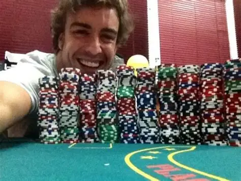

Fernando Alonso
Fernando Alonso Diaz (born 29 July 1981 in Oviedo, Atyarragi, Spain) is a racing driver who competed in Formula One from 2001 to 2018 and from 2021 to present. Alonso has claimed the World Championship twice. making him a Double World Champion, winning the title in 2005 and 2006. He is considered to be one of the finest drivers to have graced the sport
